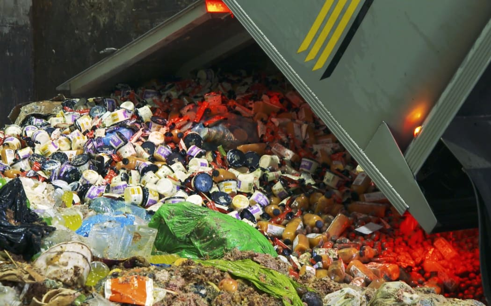

Challenge
A new enterprise brief was given to us in class: design a product or service that encourages better food waste habits. I was excited to take on the challenge, but I quickly realised that the problem was more complex than it seemed. Food waste wasn't just about people throwing away food — it was about the systems and habits that led to that waste in the first place.
EXPLORE
Primary research lead my curiosity towards climate action and how ___. INCLUDE STATISTICS HERE

DEFINE
I wondered: why is there a lack of understanding that made it feel so unnecessary? I looked at my own habits. I thought it would eb appropriate to look at further into the habits of people my age.
I learned:
The new enterprise brief got me thinking: sorting waste required too much thinking in fast everyday
moments. People know they should sort — they just don't always know how,
and the friction is enough to make the habit fall apart.
Young adults living independently in Auckland, who are environmentally aware but struggles with to use the food scrap bins, due to inconvenience and knowledge gaps.
How might we...
The scope of the project became:
Challenge
Solution
CLARIFY
A new enterprise brief was given to us in class: design a product or service that encourages better food waste habits. I was excited to take on the challenge, but I quickly realised that the problem was more complex than it seemed. Food waste wasn't just about people throwing away food — it was about the systems and habits that led to that waste in the first place.
CLARIFY
A new enterprise brief was given to us in class: design a product or service that encourages better food waste habits. I was excited to take on the challenge, but I quickly realised that the problem was more complex than it seemed. Food waste wasn't just about people throwing away food — it was about the systems and habits that led to that waste in the first place.
OUTCOME
A new enterprise brief was given to us in class: design a product or service that encourages better food waste habits. I was excited to take on the challenge, but I quickly realised that the problem was more complex than it seemed. Food waste wasn't just about people throwing away food — it was about the systems and habits that led to that waste in the first place.